Fenster ausmessen.Selbst. eezi.
Messen kostet nichts. Das Aufmaßblatt für jeden Fensterbauer kostet einmal 7,99 €.

Messen kostet nichts. Das Aufmaßblatt für jeden Fensterbauer kostet einmal 7,99 €.
Aus dem Konfigurator
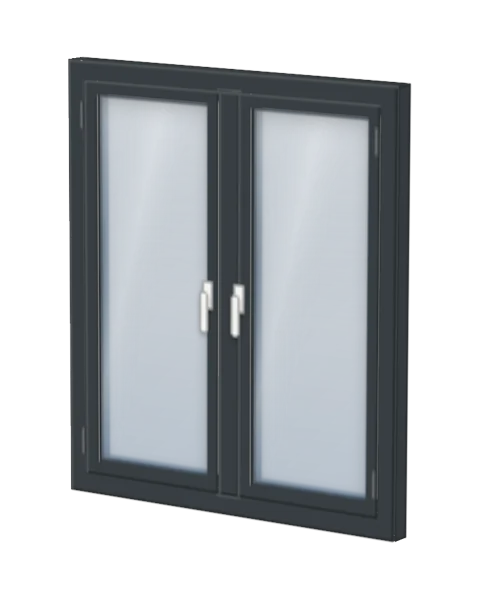
Dreh-Kipp, 2-flügligKunststoff · Anthrazitgrau, in der App planen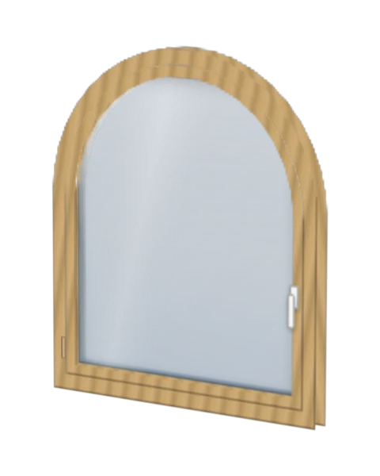
RundbogenfensterHolz · Eiche hell, in der App planen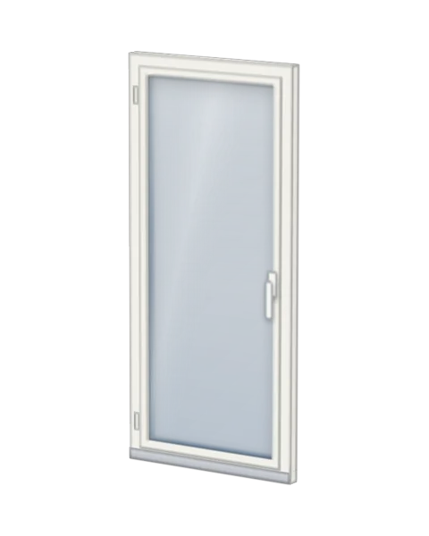
BalkontürKunststoff · Verkehrsweiß, in der App planen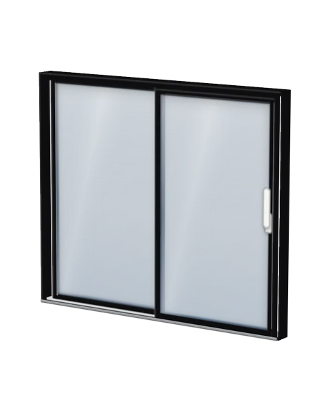
Hebe-Schiebe-TürAluminium · Tiefschwarz, in der App planen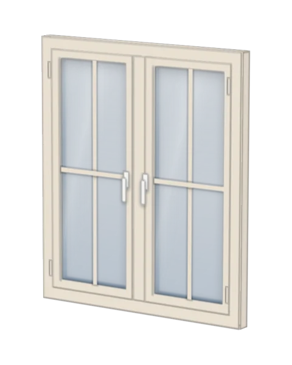
Glasteilende SprossenHolz · Cremeweiß, in der App planen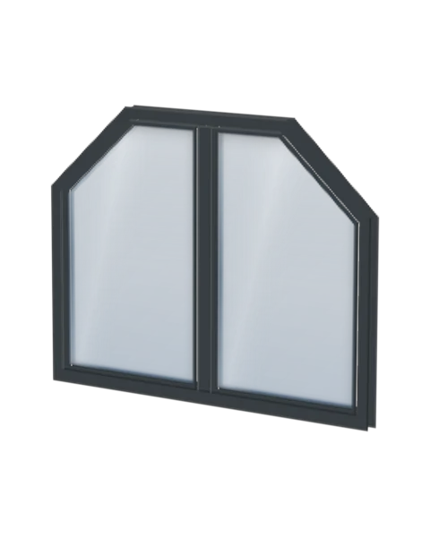
Festverglasung, TrapezAluminium · Anthrazitgrau, in der App planen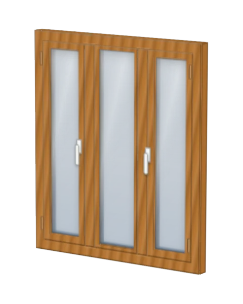
Dreh-Kipp, 3-flügligKunststoff · Golden Oak, in der App planen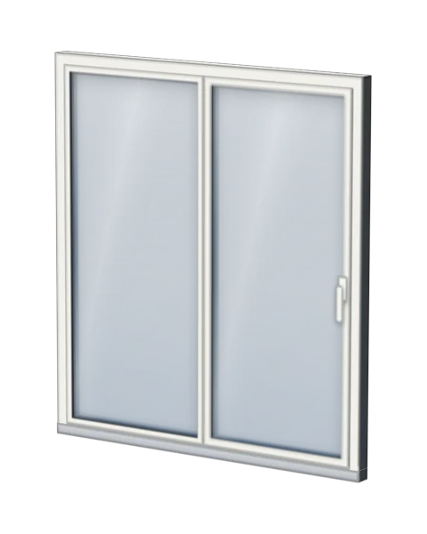
PSK-TürKunststoff-Alu · innen weiß, in der App planen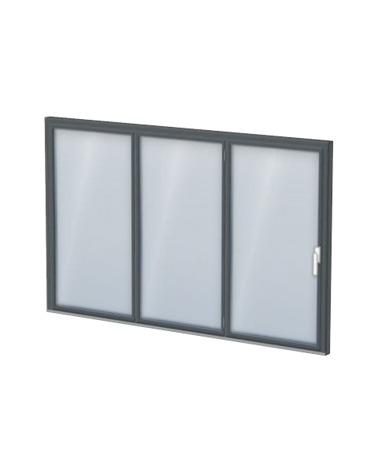
FaltschiebewandAluminium · DB 703, in der App planen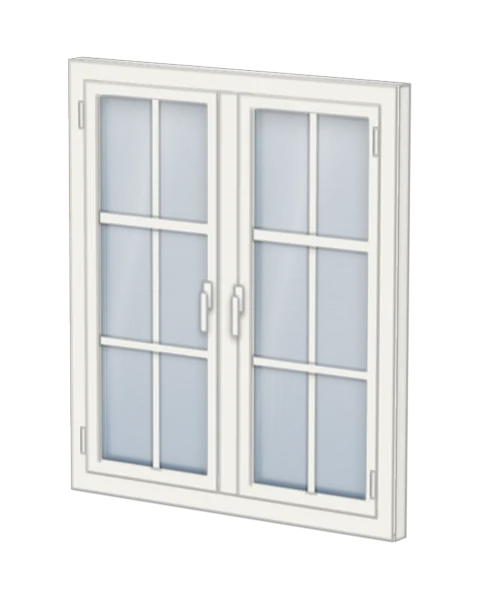
Mit Wiener SprosseKunststoff · Verkehrsweiß, in der App planenAlle Fenster: Ansichten aus dem 3-D-Modell der App. Alle Zahlen: Auswahl in der App, Stand Oktober 2026.
So geht es
Die App führt dich Fenster für Fenster durch, wie beim Termin vor Ort. Ohne Konto, ohne App aus dem Store.
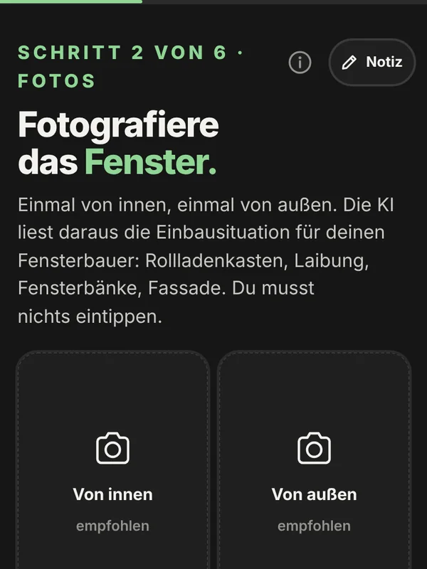
Ein Foto von innen, eins von außen. Daraus liest die App die Einbausituation für deinen Fensterbauer.
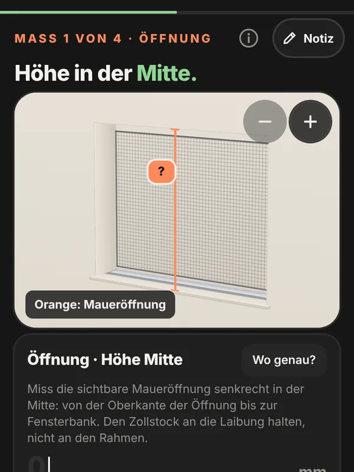
Vier Maße mit dem Zollstock. Die App zeigt im Bild, wo du anlegst, und fragt nach, wenn etwas nicht passt.
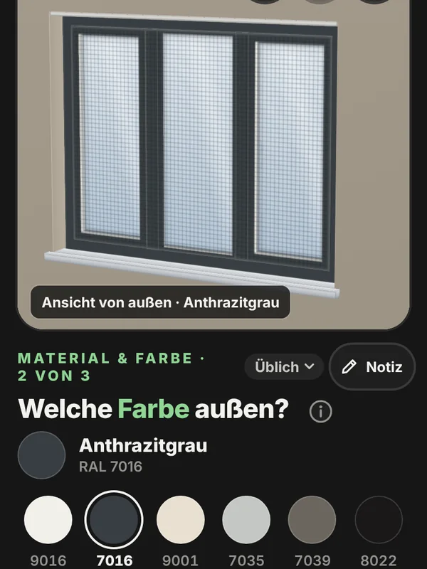
Öffnungsart, Material, Farbe, Glas, Rollladen: Du wählst, das 3-D-Modell zeigt es sofort. Unsicher? Dein Fensterbauer berät dich.
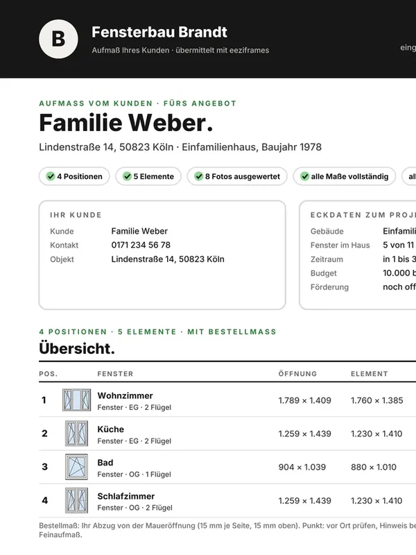
Alles auf einem Blatt als PDF, das jeder Fensterbauer lesen kann. Einmal 7,99 € für alle Fenster.
Erst ansehen? Die Führung zeigt alles in zwei Minuten, ohne eigene Maße.
Fenster für Fenster
Alles, was der Fensterbauer für ein Angebot braucht, sauber sortiert.

Das Blatt ist fürs Angebot; vor der Fertigung misst dein Fensterbauer einmal nach. Beispiel: Aufmaß von Familie Weber bei Fensterbau Brandt, beide erfunden.
Preis
Einführungspreis bis 17. November, danach 12,99 €. Du zahlst erst, wenn alle Maße da sind: mit Karte, Apple Pay oder Google Pay, über Stripe.
Ratgeber
Für Fensterbauer
Unter Ihrer Domain und in Ihrer Marke: Ihre Kunden planen ihre Fenster selbst, Sie bekommen jede Anfrage mit Aufmaßblatt. Ihre Kunden zahlen nichts.
Ein Link genügt, per WhatsApp, SMS, E-Mail oder von Ihrer Website.
Pilotphase: noch kostenlos. Danach sind die ersten drei Aufmaße frei, dann 9 € je Projekt oder ein Abo ab 49 € im Monat, netto. Konto und Projekte bleiben bis dahin in Ihrem Browser; jedes Aufmaß sichern Sie als PDF.